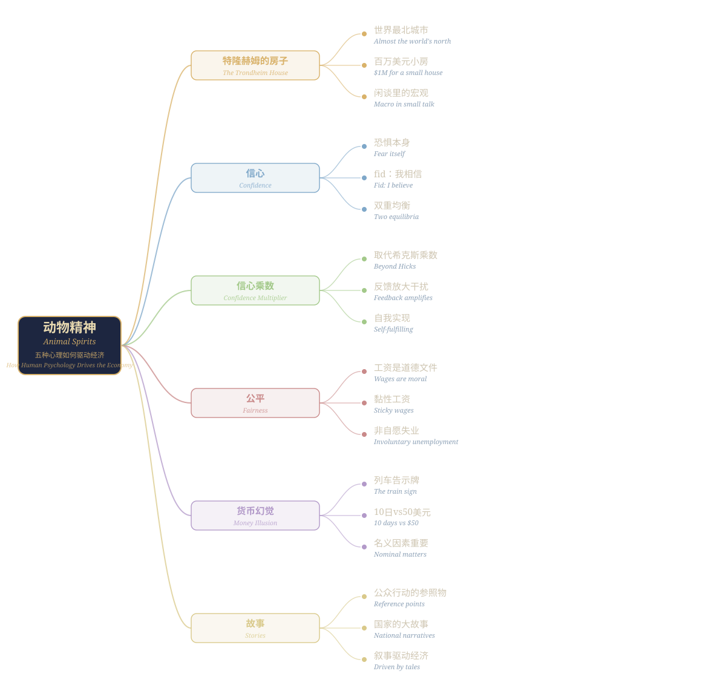

动物精神
〇 · 书籍信息
基本信息
| 书名 | 《动物精神：人类心理活动如何驱动经济、影响全球资本市场》——两位诺奖得主的宣言：宏观经济学只解释「对亚当·斯密理想体系的最小偏离」是不够的，必须解释实际发生且能观察到的偏离 |
|---|---|
| 作者 | 乔治·阿克洛夫（2001 年诺奖，柠檬市场）与罗伯特·席勒（2013 年诺奖，资产价格）——写作于 2008 年冬至 2009 年：一本「具有生命力的关于金融危机的新书」 |
| 结构 | 第一部分：动物精神的 5 个方面——信心、公平、腐败和反社会行为、货币幻觉、故事；第二部分：8 大问题——为什么萧条 / 央行权力 / 失业 / 通胀与失业此消彼长 / 储蓄随意 / 股价房价 / 贫困 / 货币政策 |
| 理论 | 「正是我们不断变化的信心、诱惑、嫉妒、怨恨、幻觉，特别是对经济本质的认识引发了危机」——标准教科书把经济波动写成理性世界的微小偏离，本书反其道：动物精神不是噪音，是引擎 |
| 一句话 | 经济的涨落不是算出来的，是感觉出来的：信心是一块基石，工资谈的是公平，定价留着幻觉，而人人活在故事里——凯恩斯的「动物精神」被两位诺奖得主写成了一整套宏观经济学。 |
一 · 核心主题总览
五种动物精神里的四组母题：① 信心：最重要的元素
「自有美利坚合众国以来，经济衰退就一直被认为是缺乏信心的结果」——罗斯福 1933 年就职演讲是标准动作：「我们唯一应该恐惧的就是恐惧本身」。但两位作者给信心换了个引擎：词典里 confidence 的含义是「信任」或「完全相信」，词根来自拉丁文 fid（我相信）——而当前的信心危机正被称作 credit crisis（信用危机），credit 同样源自拉丁文——信心与信用同源：它不是预测，是信任本身。
② 信心乘数与双重均衡
经济可以停在很多个均衡上：「可能存在一个好的（重建）均衡……我们就说人们是有信心的；也可能存在一个不好的（不重建）均衡……我们就说人们缺乏信心」——信心「只不过是一种预测」，但它是能自我实现的预测。为此他们提出「信心乘数」取代希克斯的简单乘数：「我们的理论基石是信心以及信心与经济运行之间的反馈机制，正是这种机制放大了各种干扰」。
③ 公平与货币幻觉
「工资和价格的设定大体上取决于对公平问题的关注」——工资不是清算价格，是道德契约。货币幻觉则由一块告示牌揭开：波士顿通勤列车牌写着「禁止吸烟——单处或并处 10 日以下监禁，50 美元以下罚金」——两种惩罚荒谬地不相称，因为 1968 年立法后通胀侵蚀了 50 美元的实际价值而法律从未修改：名义数字 frozen，真实世界一直在动——「告示牌表明了，名义因素的确重要」。
④ 故事：公众行动的参照物
第五种动物精神最出人意料：「我们对现实生活的感觉、对自我身份的认同……是同我们自身和他人的生活故事交织在一起的。这些故事汇集成国家和世界的故事，并在经济中发挥重要作用」——房价狂热是故事，犯罪潮是故事，国家的繁荣与萧条也是故事：人类不是被数字驱动，是被叙事驱动。
二 · 第一段 信心 —— 从特隆赫姆到罗斯福—— 一栋小房子 · 恐惧本身 ——
特隆赫姆的房子
全书的第一块砖是一桩被忽略的怪事：挪威中部偏远小城特隆赫姆（「几乎称得上是世界最北城市」）的一栋普通小房子，卖出 100 多万美元——阿克洛夫起初不在意，席勒追问之后两人把它放进更大的市场背景：偏远的房价也疯了，说明狂热不是局部的泡沫，是全球性的思维模式。他们的结论构成方法：「这个小故事值得认真思考，因为它可以让我们洞悉经济周期的两个主要特征——繁荣和衰退——背后的思维模式」——宏观数据显示不了的东西，藏在饭桌上的故事里。
◆ 语言学习 · 概念 · 思维模式
| 特隆赫姆 | 挪威最北的城市：以一栋小房子的价格标记全球狂热 |
|---|---|
| 思维模式 | 经济波动的底层变量：信心与信用的双重危机 |
| 怪事的信号 | 被忽略的反常小事——宏观的线索在微观的闲谈里 |
| 双重危机 | 信心危机 = 信用危机：拉丁词根的同源提醒 |
句型 ｜ 「这个小故事值得认真思考，因为它可以让我们洞悉经济周期的两个主要特征——繁荣和衰退——背后的思维模式。」——诺奖经济学家的方法论示范：从婚礼上的闲谈读出周期——宏大叙事的正确入口是具体小事。
恐惧本身
信心章节的正面教材是罗斯福：1933 年首次就职演讲「我们唯一应该恐惧的就是恐惧本身」，同一演讲补充：「我们遇到的问题并不严重，要有信心」——罗斯福用同一个词做两件事：安抚情绪 + 给出预测。作者随即校正经济学的窄化：「经济学家对信心这个词语的含义有过特别的诠释」——把它降格为对未来的概率判断；但词典说 confidence 是「信任」或「完全相信」：信心不只是算出来的，是相信出来的——这正是它既能被演讲点燃、也能被危机引爆的原因。
◆ 语言学习 · 概念 · 信心
| 恐惧本身 | 罗斯福命题：最需要管理的变量是恐惧而非现实 |
|---|---|
| confidence | 词源 fid（我相信）：信心是信任，不是概率 |
| credit | 信用与信心同源——金融危机即信心危机 |
| 重塑信心 | 衰退期的标准动作：从摩根到罗斯福一脉相承 |
习语 ｜ 「我们唯一应该恐惧的就是恐惧本身。」——被引用八十年的政治金句，在本书里被还原为经济学命题：恐惧会自我实现，信心也会——两者都是合格的宏观变量。
三 · 第二段 双重均衡 —— 信心乘数—— 好均衡与坏均衡 · 自我实现 ——
好的均衡与坏的均衡
信心的经济学被讲成均衡选择问题：很多现象有多个均衡结果——「可能存在一个好的（重建）均衡，在这种情况下，我们就说人们是有信心的；也可能存在一个不好的（不重建）均衡，在这种情况下，我们就说人们缺乏信心」。这解释了衰退的戏剧性：基本面没有一夜坍塌，坍塌的是均衡坐标——人们在「重建」与「不重建」之间完成了一次集体跳轨，而跳轨的触发物只是故事与情绪。
◆ 语言学习 · 概念 · 均衡跳轨
| 双重均衡 | 重建 / 不重建：同一基本面上的两种世界 |
|---|---|
| 均衡选择 | 信心决定停在哪条轨道上——预测即轨道 |
| 自我实现 | 相信萧条 → 收缩行为 → 萧条成真 |
| 跳轨时刻 | 集体切换均衡的瞬间——危机的戏剧性所在 |
句型 ｜ 「信心只不过是一种预测。」——先立后破的经典句法：它是预测，却是能改变现实的那种预测——经济学里少有的「说出即生效」的变量。
信心乘数
作者对凯恩斯框架的修改集中在一点：「凯恩斯经济学理论最基本的元素就是乘数概念」——希克斯把它定量化并简化为刚性乘数；本书主张「用信心乘数这个关联概念取代希克斯的简单乘数」——「我们的理论基石是信心以及信心与经济运行之间的反馈机制，正是这种机制放大了各种干扰」。乘数的新含义：一笔投资的放大效果不仅走「收入-消费」链，还走「信心-投资-再信心」链——后一条链没有稳定系数，因为它取决于故事的强度。
◆ 语言学习 · 概念 · 信心乘数
| 乘数 | 凯恩斯的最基本元素：初始冲击的放大器 |
|---|---|
| 希克斯乘数 | 刚性定量版——IS-LM 时代的遗产 |
| 信心乘数 | 本书的替换件：反馈机制放大干扰 |
| 放大机制 | 信心与经济的闭环：越信越投，越投越信 |
习语 ｜ 「正是这种机制放大了各种干扰。」——一句话立起全书的理论骨架：经济的放大器不是电力是叙事——干扰的强度由故事决定，这是宏观经济学第一次给「情绪」装上杠杆。
四 · 第三段 公平与货币幻觉 —— 工资的道德与一块告示牌—— 道德契约 · 50 美元罚金 ——
工资不是价格，是公平
第二个理论基石只有一句话：「工资和价格的设定大体上取决于对公平问题的关注」——教科书假设工资由供需清算，现实是雇主不敢降薪：裁员时的「最后进入者先离开」、拒绝削减名义工资，都不是效率计算，是公平焦虑。这解释了失业的黏性：如果工资能像面粉价格一样随行就市，衰退本可自动出清；正因为工资被公平感冻住，市场才需要动物精神来解释非自愿失业——工资单是一份道德文件，不是一张报价单。
◆ 语言学习 · 概念 · 公平工资
| 公平问题 | 工资与价格设定的真实依据——供需之外的道德变量 |
|---|---|
| 黏性工资 | 名义工资拒绝下调：公平焦虑的经济学后果 |
| 非自愿失业 | 公平冻结工资后，衰退无法自动出清 |
| 道德文件 | 工资单的本质：雇佣关系里的公平契约 |
句型 ｜ 「工资和价格的设定大体上取决于对公平问题的关注。」——理论基石写法：一句陈述解决一个学派之争：砍工资不是省钱，是撕合同——所以理性的雇主宁可裁员也不降薪。
告示牌上的货币幻觉
第三块基石来自席勒的一个日常观察：波士顿通勤列车告示牌：「禁止吸烟——单处或并处 10 日以下监禁，50 美元以下罚金」——「这两种惩罚看起来很不相称」。解释是货币幻觉：那条法律颁布于 1968 年，「在通货膨胀的侵蚀下，罚金的实际价值降低了，然而该法律并没有修改罚金上限」——名义数字被冻在 1968 年，真实价值一路缩水，直到 50 美元的罚金与 10 天监禁荒谬地并列。结论直指教科书：现代宏观经济学的基本假设是「人们没有货币幻觉」，「但恰恰相反，告示牌表明了，名义因素的确重要」——通胀的面纱不是没人揭开，是揭开了也没人看。
◆ 语言学习 · 概念 · 货币幻觉
| 货币幻觉 | 决策受名义金额影响——数字骗人的方式 |
|---|---|
| 告示牌 | 席勒的日常证据：1968 年的 50 美元罚金活到今天 |
| 通胀的面纱 | 名义与真实的错位：被冻结的名义，流动的真实 |
| 名义因素 | 现代宏观声称无关、实际无处不在的变量 |
习语 ｜ 「告示牌表明了，名义因素的确重要。」——一块禁烟牌扳倒一条基本假设：最好的经济学田野调查不用问卷，用一块被通胀遗忘的牌子。
五 · 第四段 故事 —— 公众行动的参照物—— 叙事驱动 · 国家的大故事 ——
人活在故事里
第五种动物精神把经济学接回文学：「我们对现实生活的感觉、对自我身份的认同以及对自身行为的看法，是同我们自身和他人的生活故事交织在一起的」——买房故事（特隆赫姆）、繁荣故事、犯罪潮故事：个体的每个动机背后都站着一个叙事。宏观由此改写：「这些故事汇集成国家和世界的故事，并在经济中发挥重要作用」——GDP 曲线的拐点，先出现在人们嘴里的故事里：房价永远涨、互联网改变一切、这次不一样——故事的传染性决定了干扰的放大倍数。
◆ 语言学习 · 概念 · 叙事经济
| 故事 | 第五种动物精神：动机的叙事外壳 |
|---|---|
| 参照物 | 公众行动的坐标：不是数字，是别人讲的事 |
| 故事传染 | 叙事像流行病一样传播——席勒叙事经济学的种子 |
| 国家的大故事 | 个体故事汇成的宏观叙事——繁荣与萧条的总剧本 |
句型 ｜ 「这些故事汇集成国家和世界的故事，并在经济中发挥重要作用。」——从个体到宏观的叙事升级：经济不是被模型驱动，是被「大家都在讲」驱动——经济学家最后承认了说书人的地位。
与教科书分道扬镳
全书的纲领性表态出现在绪论：「教科书式的经济学试图尽可能地最小化对纯经济动机和理性的偏离……但是，这并不意味着，对亚当·斯密体系的微小偏离能够描述经济的真实运行情况。本书将打破这种传统」。作者的自我期许明确：「经济理论不能仅限于解释对亚当·斯密所描述的理想经济体系的最小偏离，还要解释实际发生且能观察到的偏离」——道琼斯先涨到 14000 多点又跌至 7500 点、贝尔斯登获救而雷曼破产、花高价买庄稼地里的房子——这些不是噪音，是需要新理论的主战场。
◆ 语言学习 · 概念 · 真实偏离
| 最小偏离 | 教科书的世界观：现实只是理想的微扰 |
|---|---|
| 实际偏离 | 本书的主战场：14000 点与 7500 点之间的世界 |
| 动物精神 | 凯恩斯的遗产被完整复活：心理驱动经济 |
| 行为宏观 | 本书开创的方向：把心理学装回宏观模型 |
习语 ｜ 「还要解释实际发生且能观察到的偏离。」——两位诺奖得主的立军令状：理论的价值以「真实世界的事件清单」结算——这场宣言后来被称为行为宏观经济学的出生证。
六 · 人物图鉴与成长弧线—— 主角配角 · 一张表看穿 ——
主要人物
阿克洛夫——2001 年诺奖得主（柠檬市场）——负责把「信心与公平」装进理论：他从婚礼闲谈里听出宏观线索的方法，成为全书的开篇示范
席勒——2013 年诺奖得主（资产价格）——负责「故事与叙事」：从列车告示牌到房价故事，他的田野是日常生活——本书是他后来《叙事经济学》的前身
凯恩斯——「动物精神」概念的源头——两位作者自称其观点「是对凯恩斯观点的重申与推进」：把凯恩斯只提了一句的心理直觉，展开成完整框架
罗斯福——信心的代言人——「恐惧本身」演说的正反面被拆解：同一句话既是安抚也是预测
次要人物（功能位）
| 挪威远亲 | 特隆赫姆买房的婚礼熟人——全书第一块砖：被忽略的怪事=宏观的线索 |
|---|---|
| 希克斯 | IS-LM 模型的建立者——被本书「过于褊狭」地简化了凯恩斯：信心乘数要取代他的刚性乘数 |
| 亚当·斯密 | 理性经济人的源头——全书反复对话的对象：不是推翻斯密，是拒绝把真实世界当成斯密体系的「微扰」 |
| 本杰明·弗里德曼 | 哈佛经济学家、本书推荐人——「公众从兴奋到焦虑甚至恐惧的情绪波动，可能会对资产价格造成极大的影响」：一语概括全书 |
七 · 主题与象征—— 每个道具都在说话 ——
| 小房子 ↔ 狂热 | 特隆赫姆的 100 万美元——泡沫的地图不按城市级别绘制 |
|---|---|
| 告示牌 ↔ 幻觉 | 10 日监禁 vs 50 美元——通胀的面纱没人揭开，但它一直在飘 |
| 乘数 ↔ 故事 | 信心乘数——放大干扰的不再是收入链，是叙事链 |
| 恐惧本身 ↔ 变量 | 罗斯福演说——政治金句的经济学户口：恐惧是宏观变量 |
| 14000 与 7500 ↔ 偏离 | 道指的一涨一跌——教科书解释不了的主战场 |
八 · 写作手法赏析—— 怎么写，就能怎么学 ——
① 小事开篇法
婚礼买房、列车告示牌——每个理论基石都从一桩可复述的日常小事推出：诺奖级论证的入口是段子级故事
② 词源取证
confidence 的 fid、credit 的同源——用词源学给「信心与信用同体」作证
③ 基石清单体
五要素逐条立基石，八大问题逐一验收——理论像清单一样可检查
④ 危机时政性
写于 2008 冬至 2009 春——书是理论也是急救手册：每章都在回答「我们现在怎么办」
九 · 名段欣赏—— 原文精读 · 逐段赏析 ——
十 · 金句摘录—— 14 条 · 中英对照 · 带出处 ——
"我们唯一应该恐惧的就是恐惧本身。"—— 第一章 · 引罗斯福 1933 就职演说
"我们遇到的问题并不严重，要有信心。"—— 第一章 · 引罗斯福
"自有美利坚合众国以来，经济衰退就一直被认为是缺乏信心的结果。"—— 第一章
"「confidenc」（信心）的含义是「信任」（trust）或「完全相信」（full belief）。这个词语来自拉丁文的「fid」，意思是「我相信」。"—— 第一章
"信心只不过是一种预测。"—— 第一章
"可能存在一个好的（重建）均衡……也可能存在一个不好的（不重建）均衡。"—— 第一章
"正是我们不断变化的信心、诱惑、嫉妒、怨恨、幻觉，特别是对经济本质的认识引发了危机。"—— 绪论
"这5个方面分别是：信心、公平、腐败和反社会行为、货币幻觉以及故事。"—— 绪论
"我们的理论基石是信心以及信心与经济运行之间的反馈机制，正是这种机制放大了各种干扰。"—— 绪论
"工资和价格的设定大体上取决于对公平问题的关注。"—— 绪论
"公众搞不清楚通货膨胀或通货紧缩，更弄不明白它们的影响。"—— 绪论
"当决策受到名义美元金额的影响时，就会产生货币幻觉。"—— 货币幻觉章
"但恰恰相反，告示牌表明了，名义因素的确重要。"—— 货币幻觉章
"这些故事汇集成国家和世界的故事，并在经济中发挥重要作用。"—— 绪论
十一 · 拓展阅读—— 原文 · 词条 · 译文 ——
十二 · 个人感悟与心得—— 三点心得 ——
三点感悟
① 听故事就是在做宏观研究
全书第一课：饭桌上的买房闲谈、办公室里的跳槽传闻，都是信心乘数的前端数据——普通人可执行的「经济温度计」，是留意身边故事的密度与方向。
② 给「感觉」记账
双重均衡提醒我们：「我感觉经济不好」本身就参与制造经济不好——复盘个人财务时，把「我的信心水平」当作与收入同级的变量记录，能提前发现自己正在跳轨。
③ 名义数字要过一遍通胀
告示牌的教训超出禁烟罚金：合同里的固定金额、记忆里的「当年房价」、工资的年度比较——凡是跨年比较的数字，先做通胀折算，再谈涨跌。
两位诺奖得主合写的这本书，最后说的其实是一件朴素的事：经济是人的总和，而人是有心事的总和——把心事听懂了，曲线才看得懂。
十三 · 一页速查（复习用）
| 五大基石 | 信心 · 公平 · 腐败与反社会 · 货币幻觉 · 故事——动物精神的完整清单 |
|---|---|
| 信心同源 | confidence 与 credit 同出拉丁词根：信心危机即信用危机 |
| 信心乘数 | 反馈机制放大干扰：取代希克斯的刚性乘数 |
| 告示牌证据 | 1968 年的 50 美元罚金：名义因素的确重要——货币幻觉实锤 |
| 故事驱动 | 个体故事汇成国家大故事：叙事是宏观的隐形引擎 |
十四 · 全书思维导图—— 一图纵览 ——

一图纵览全书骨架 · 中英双语对照 · 手机端可左右滑动查看全图